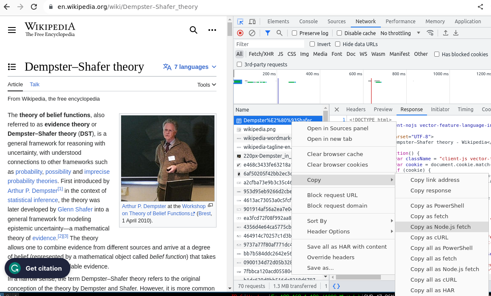

I have a problem. Or, I had a problem, because now it’s fixed. We use You Need a Budget for keeping track of expenses and managing our budget. It’s great because it has automatic sync with our bank. But we also have a food card from Ticket. And that card does not have automatic sync. So we need to enter our transactions manually - but, of course, we don’t… So, I fixed this.
The Ticket service also doesn’t have a freely available developer API. They have a developer toolkit, but it’s geared towards businesses. But I can check transactions on their website. So I thought I could just automate the login process with requests and be done with it. But the numerical password is entered on a randomized keypad, one digit at a time. If I need to get the keyboard state before entering the configured password every time I want to get new transactions, this project will turn out to be way more difficult. So I went and checked the requests made. Pretty much every browser lets you easily check the requests made to servers using developer tools. In Google Chrome/Chromium/Brave, the hotkey is Ctrl+Shift+c.

It turns out that the randomized keypad is just being used on the front-end. It’s a security measure directed more to avoid eavesdropping. The request contains the whole username and password. This is good news for me since I can more easily automate this. This first login request already returns the card balance, too. So, I went on to write a quick script to replicate this request. Since encoding all the header data is laborious, I copied the request as a cURL request and used this very handy website [1] that converts cURL requests to Python requests (it also supports many other languages). Here is the code generated for the login:
import requests
cookies = {
'ASP.NET_SessionId': 'chv0olcmzqojke2gz0zyuwdc',
}
headers = {
'Accept': 'text/html,application/xhtml+xml,application/xml;q=0.9,image/avif,image/webp,image/apng,*/*;q=0.8,application/signed-exchange;v=b3;q=0.7',
# ... more header lines, deleted for brevity
'sec-ch-ua-platform': '"Linux"',
}
data = {
'User': '1111222233334444',
'Password': '1234567',
}
response = requests.post('https://hbcartaoticket.unicre.pt/', cookies=cookies, headers=headers, data=data)The Python generated code uses the requests package [2], which is what I usually use too. I tried the code and it worked. Great. Now, I needed to repeat the process for the transactions request. I repeated the process and… it didn’t work. The requests are using cookies. I altered the code slightly to use a session and all requests are sent within this session. This makes it easy to keep track of necessary cookies.
#...
with requests.Session() as session:
#....
r = session.post('https://hbcartaoticket.unicre.pt/', headers=headers, data=data)I now get the HTML code with all the data from all transactions. It’s a matter of parsing this code. I used BeautifulSoup [3], which makes it easy to parse HTML. Now that I had the basic interaction nailed down, I created a simple API. A dataclass for single transactions and the whole transaction database. The Ticket object will initialize the database, request all transactions since 2000, and store the database into a pickle file. If the database already exists, the update method will fetch transactions only since the date of the latest transaction, to minimize data transfer.
@dataclass
class Transaction:
"""Class for keeping track of an item in inventory."""
date: dt.datetime
value: float
description: str
@dataclass
class TransactionDatabase:
"""Class for keeping track of an item in inventory."""
transactions: List[Transaction]
last_update: dt.datetime
balance: float
class Ticket:
def __init__(self, path: Path):
def authenticate(self, credentials: Tuple[str, str]):
def load_db(self) -> TransactionDatabase:
def update(self, update_period: dt.timedelta = dt.timedelta(minutes=60)) -> Tuple[float, List[Transaction]]:
def init_db(self) -> Tuple[float, List[Transaction]]:
def get_new_transactions(self) -> Tuple[float, List[Transaction]]:
def get_transactions(self, start_date: dt.datetime, end_date:dt.datetime) -> Tuple[float, List[Transaction]]:
# workflow
credentials = ('1111222233334444', '1234567')
database_path = Path('database.pickle')
ticket = Ticket(database_path)
ticket.authenticate(credentials)
ticket.load_db() # if it exists
balance, T = ticket.update() # get new transactions, or init database if no db exists yet
# from now on, I can just call the update method to get **new** transactions
print(sorted(T, key=lambda x: x.date)) # sort by dateThe next step to create the sync tool would be to start interacting with the YNAB API. Thankfully, YNAB has an open and well documented API [4], so it should be straightforward, and I’ve done this in the past. But I’ll also want to separate the Ticket API logic from the YNAB API logic, from the sync tool. I will be using PyPI package that implements a client for the YNAB API [5], so this part is already independent. This means I need to create the Ticket API logic in a separate, reusable and easily installable package.
Codebase: